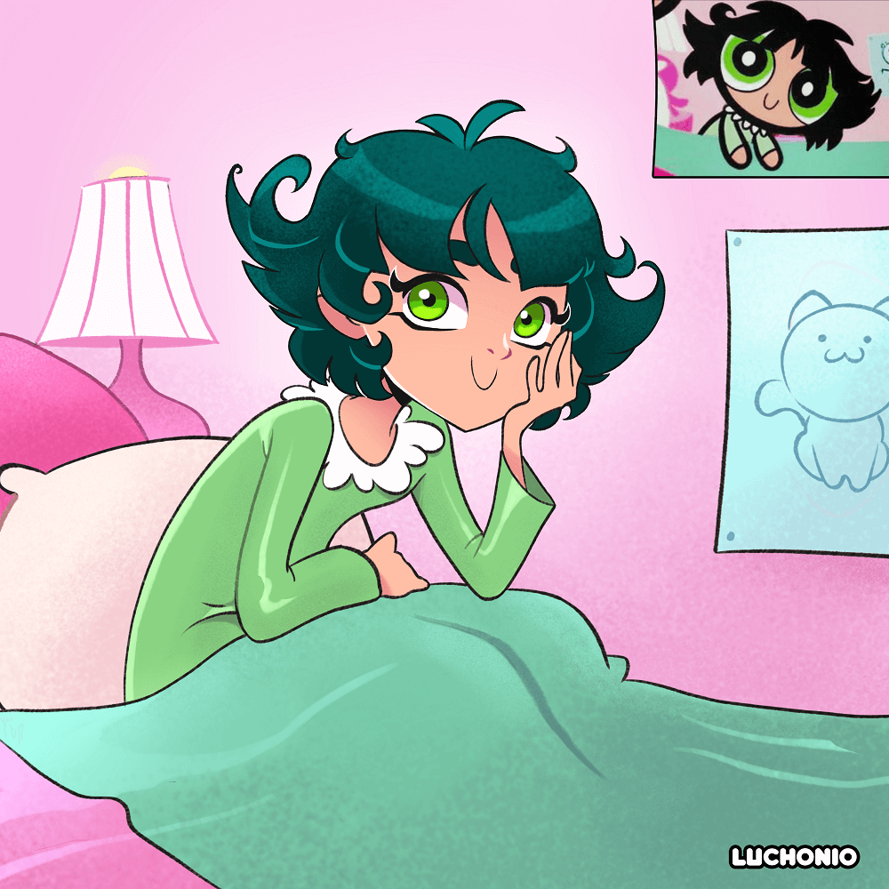

Galeria
La Tripulación del Bebop

En este dibujo podemos ver a la tripulación del bebop de la animada japonesa Cowboy bebop, siendo un fan art me tome la libertad de adaptar los diseños de la animación ah mi estilo de dibujo, en general use colores más vivos para el fondo como en los personajes para poder distanciarme un poco mas de los diseños originales y darles un toque más personal.
Buttercup
Dibujo de Buttercup el cual realice como parte de un reto en redes sociales, el cual consistía en dibujar al personaje de la serie animada para niños “Powerpuff girls” a tu estilo de dibujo, en una de las poses mas recordadas de esta serie de televisión. Quise respetar lo mas que pude el diseño original ya que es una serie animada de la cual soy un gran fan, puesto que la miraba cuando era niño.
Gwen

Este es un dibujo del personaje de Gwen de Drama Total, en el cual quise dar la sensación de sensualidad con la pose del personaje y a su vez colocarle un fondo detallado y acorde al tono de la serie animada el cual trata de un reality show en una isla donde las entrevista con los participantes se den en los baños.